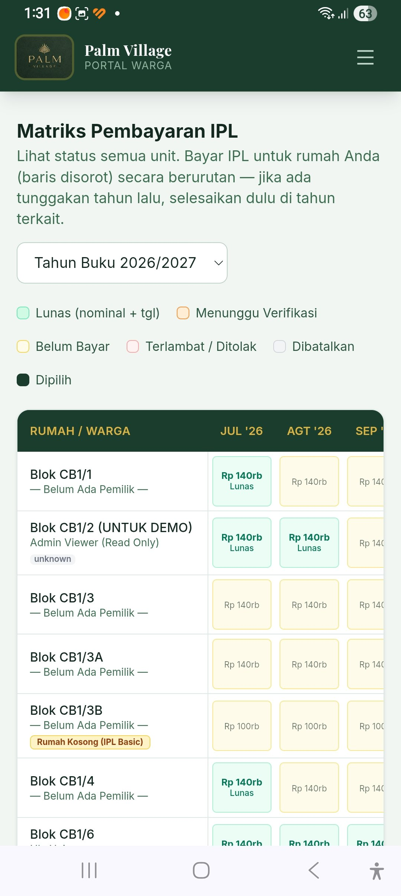

Cara Masuk / Login ke Portal
Portal Warga Palm Village menggunakan autentikasi terpadu Akun Google yang aman dan tidak memerlukan pembuatan password baru.
Langkah 1.1: Buka Portal & Klik Masuk dengan Google
Buka tautan Portal Warga pada peramban HP Anda (Chrome/Safari). Klik tombol putih bertuliskan "Sign in with Google".

Langkah 1.2: Pilih Akun Google Terdaftar
Pilih akun Gmail Anda yang sudah terdaftar di database pengurus RT Palm Village.

Langkah 1.3: Konfirmasi Akun
Jika muncul konfirmasi satu sentuhan (*One-Tap Login*), tekan akun Anda untuk langsung masuk ke dashboard.

Mengenal Beranda Utama Portal
Setelah masuk, Anda akan diarahkan ke halaman utama yang menyajikan menu akses cepat layanan komplek.

Fitur-Fitur Utama di Beranda:
- 🌴 Kartu Sapaan & Peran: Menampilkan nama Anda dan status hak akses sebagai
WARGA. - 👤 Menu Penghuni: Direktori daftar tetangga dan status hunian rumah di seluruh blok.
- ▦ Menu Matriks Bayar: Halaman utama untuk memeriksa status tagihan dan membayar IPL secara mandiri.
- 🚨 Kontak Darurat & Pos Satpam (SOS): Akses panggilan darurat 24 jam langsung ke pos keamanan komplek.
Melihat Matriks Pembayaran IPL
Matriks IPL menyajikan transparansi seluruh iuran warga kompleks per bulan dalam satu tabel interaktif.
Filter Tahun Buku & Legenda Warna
Pada bagian atas halaman, Anda dapat memilih Tahun Buku (misalnya 2026/2027) dan melihat panduan warna status.

Menemukan Unit Rumah Anda ("RUMAH SAYA")
Unit rumah Anda secara otomatis ditandai dengan latar belakang kekuningan dan badge kuning bertuliskan "RUMAH SAYA" (contoh: Blok CB1/8). Anda hanya dapat memilih dan membayar tagihan pada baris rumah Anda.

Pembayaran IPL via QRIS Otomatis (Instan)
Metode QRIS sangat direkomendasikan karena pembayaran diverifikasi langsung oleh sistem secara real-time tanpa perlu verifikasi manual pengurus.
Langkah 4.1: Pilih Bulan Tagihan
Ketuk kotak bulan yang belum lunas pada baris RUMAH SAYA. Kotak yang dipilih akan berubah warna menjadi gelap dan bertanda centang (✓). Pembayaran dapat dilakukan untuk 1 bulan atau beberapa bulan sekaligus.

Langkah 4.2: Periksa Total & Klik Lanjutkan
Panel ringkasan di bawah layar akan menampilkan jumlah bulan dan total rupiah. Klik tombol kuning "Lanjutkan Pembayaran →".

Langkah 4.3: Pilih Metode QRIS
Pada jendela konfirmasi, pastikan pilihan metode berada di "QRIS", lalu tekan tombol kuning "Lanjut ke QRIS".

Langkah 4.4: Kode QRIS Dinamis Muncul
Layar akan menampilkan QR Code dinamis khusus untuk tagihan Anda beserta Order ID dan total nominal yang tepat.

Langkah 4.5: Bayar Melalui Aplikasi E-Wallet / Mobile Banking
Buka aplikasi perbankan atau e-wallet Anda (seperti GoPay, OVO, ShopeePay, DANA, BCA Mobile, Livin Mandiri, BRImo, Jago, dll.):
• Jika 1 HP: Ambil screenshot layar QRIS, buka menu Scan QR di aplikasi bank/e-wallet, lalu pilih ambil gambar dari galeri foto.
• Jika 2 Perangkat: Langsung arahkan scanner kamera ke QR Code di layar.
Pastikan merchant tujuan tertera "Palm Village - Social" dengan nominal yang sesuai, lalu selesaikan pembayaran.

Langkah 4.6: Konfirmasi Selesai & Status Otomatis Hijau
Setelah transaksi di HP Anda berhasil, kembali ke Portal Warga dan tekan "✓ Saya Sudah Selesai Membayar". Status tagihan otomatis terupdate menjadi Lunas (Hijau).

Pembayaran IPL via Transfer Bank Manual
Jika Anda lebih nyaman mentransfer langsung ke rekening kas RT/RW, Anda dapat mengunggah bukti transfer manual untuk diverifikasi pengurus.
Langkah 5.1: Pilih Tab "Transfer Bank"
Pada pop-up *Konfirmasi Pembayaran IPL*, ketuk pilihan tombol "Transfer Bank".

Langkah 5.2: Pilih File Bukti Transfer
Transfer nominal tagihan ke rekening pengurus, lalu klik tombol "Choose File" dan pilih foto atau screenshot bukti transfer dari galeri foto HP Anda (format JPG/PNG maks 2 MB).

Langkah 5.3: Kirim Bukti Transfer
Setelah file terunggah (ditandai nama file & tanda centang hijau), tuliskan catatan opsional jika diperlukan (contoh: *Transfer via Bank Mandiri an. Budi*), kemudian tekan tombol kuning "Kirim Bukti Transfer".

Arti Status Warna Tagihan IPL
Gunakan tabel referensi berikut untuk memahami arti setiap kotak warna pada matriks pembayaran:
| Warna Kotak | Status | Keterangan Detail |
|---|---|---|
| ● Hijau Muda | Lunas | Tagihan telah berhasil dibayar dan diverifikasi. Tertera nominal dan tanggal pembayaran. |
| ● Oranye / Kuning Tua | Menunggu Verifikasi | Bukti transfer manual sudah diunggah oleh warga dan sedang dalam antrean review oleh pengurus. |
| ● Kuning Pucat | Belum Bayar | Tagihan bulan berjalan atau bulan baru yang belum dilakukan pembayaran. |
| ● Merah Muda | Terlambat / Ditolak | Melewati batas jatuh tempo atau bukti transfer manual yang diunggah ditolak karena tidak sesuai. |
| ● Abu-abu | Dibatalkan | Tagihan atau transaksi pembayaran dibatalkan oleh sistem. |
| ● Hijau Tua (Gelap) | Dipilih | Bulan tagihan yang sedang Anda klik/centang untuk dibayarkan saat ini. |
Layanan Lainnya (Daftar Penghuni & SOS)
1. Direktori Penghuni Kompleks
Menu Penghuni memudahkan Anda mencari informasi tetangga kompleks berdasarkan nomor blok dan status hunian (Dihuni Pemilik, Kontrak, atau Rumah Kosong).
2. Kontak Darurat & Pos Satpam 24 Jam (SOS)
Untuk situasi darurat keamanan, tamu tidak dikenal, insiden medis, atau penerimaan paket penting, Anda dapat langsung menekan tombol panggilan cepat atau WhatsApp ke Pos Satpam Siaga 24 Jam yang tertera di halaman depan portal.